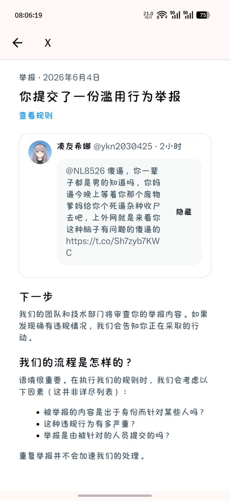
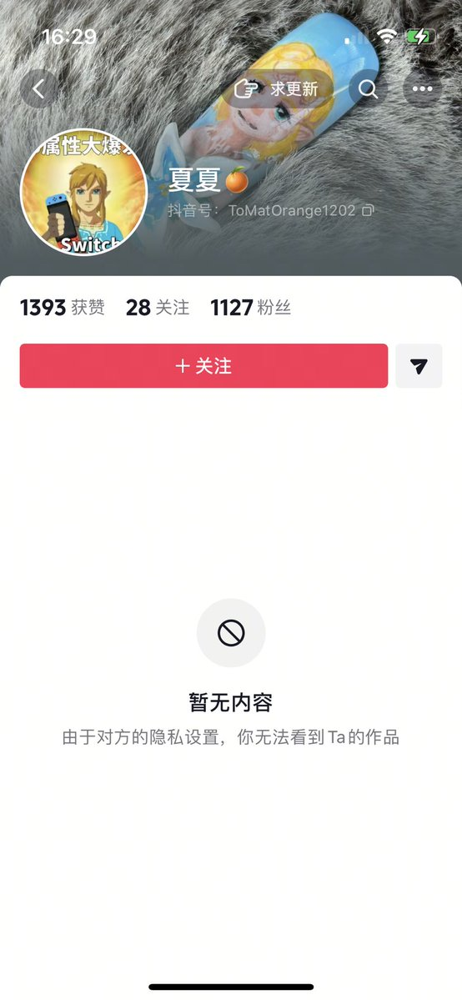

柠凉🍥🏳️⚧️
@NL8526
你顺畜是这样的 扣这么多字也不知道能攻击到啥地方 还能从抖音追过来🐶叫也是给他急完了😹觉得我们对于键盘侠骂一句永远都是xx就会抑郁紫砂嘛 🧐


枕星河✨
@xiaomianya521
这种二极管、劳保女、能不能死一死啊？还切了QQ也男的又不能改变染色体，真的笑死我了，我说了一句要不是规则不允许，否则一切可成为现实，就破防拉黑，果然啊某些顺➗真的脑子有病😅 https://t.co/CAamXe2huK